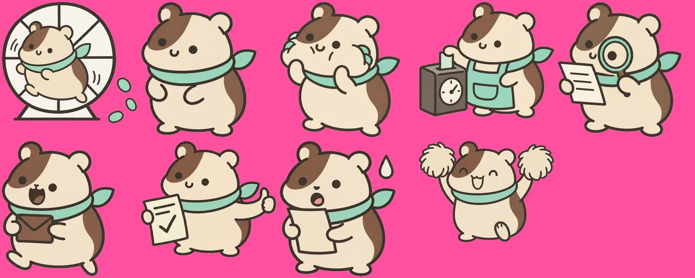
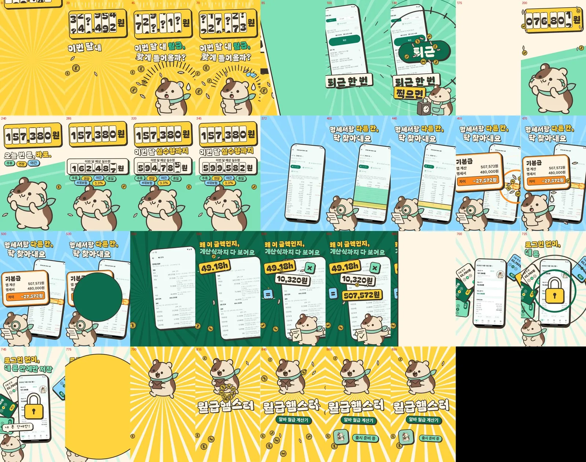

이번 달 내 월급, 햄스터는 알고 있다
월급햄스터 (직접 만든 앱, 출시 준비 중)
직접 만든 알바 월급 계산 앱의 광고예요. 퇴근 버튼 한 번 → 오늘 번 돈 → 이번 달 실수령 → 명세서 대조 → 계산 근거, 앱의 실제 기능 순서가 그대로 장면이 되는 세로 30초예요.
세로 30초 본편 · 1080×1920 · 소리 있음 — 화면 속 금액은 스토어용 데모 데이터
브리프
알바·단시간 근로자가 출퇴근만 찍으면 오늘 번 돈과 이번 달 실수령을 보고, 급여명세서와 맞는지 대조하는 앱. 3D 없이 2D만으로, 기존 두 광고와 겹치지 않는 세로 광고를 목표로 했다.
콘셉트
앱의 실제 기능 순서를 그대로 장면 순서로. 120BPM 박자 격자(15프레임)에 컷과 숫자 움직임을 맞췄다.
마스코트
햄스터 기준서(좌우 반전 금지·팔레트 5색)를 통과한 그림만 투명하게 오려, 한 장씩 코드로 움직이는 컷아웃 애니메이션으로 만들었다.

실제 앱 화면
광고 속 앱 화면은 실제 앱의 스토어용 데모 화면. 굴러가는 금액 오도미터와 스캔 빔으로 UI를 움직였다.
본편
HTML·JS로 프레임마다 화면을 계산해 헤드리스 Chrome으로 캡처하고 ffmpeg로 인코딩했다. 음악은 로컬 모델(ACE-Step)로 새로 만들고, 효과음은 직접 합성했다.

갤러리


내가 한 일
사용한 도구
모든 광고는 실제 브랜드와 관계없는 개인 비공식 콘셉트 작품입니다.
딸깍, 여름이 터진다
딸깍(TTALKAK) LIME SODA — 가상 브랜드 · 판매용 아님 · 포트폴리오 콘셉트
직접 만든 가상 탄산음료 브랜드 딸깍(TTALKAK) LIME SODA. 3D 캔과 2D 모션그래픽으로 만든 가로 20초 본편, SNS 세로 15초, 세로 포스터 2장, 브랜드 시트까지 한 세트예요.
케이스 스터디 보기 →